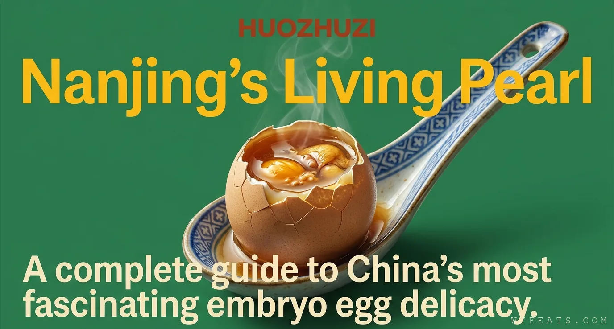
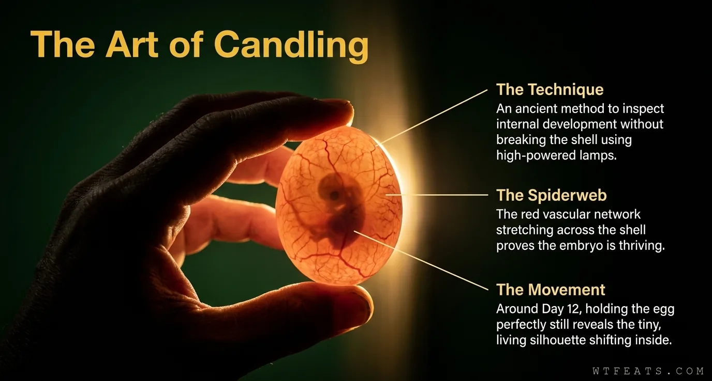

?
Next Chapter
The Global Egg Tour
Filipino balut, Vietnamese hot vit lon, and every other culture that looked at a fertilized egg and saw dinner.
Huozhuzi Guide
Start with the quick explanation, follow the twelve-day visual story, or go full food-craft mode.
Start Here
The friendly overview: what Nanjing's living pearl is, why it is gentler than its reputation, which rumors are wrong, and how to eat your first one.

Visual Story
A scrollable journey from plain egg to living pearl: the candling spiderweb, the harvest window, the umami science, and the eating ritual.

Deep Dive
The candling ritual, the 21-day biological window, the chemistry of extreme umami, huozhuzi vs balut, and the four-step eating ritual.
Next Chapter
Filipino balut, Vietnamese hot vit lon, and every other culture that looked at a fertilized egg and saw dinner.